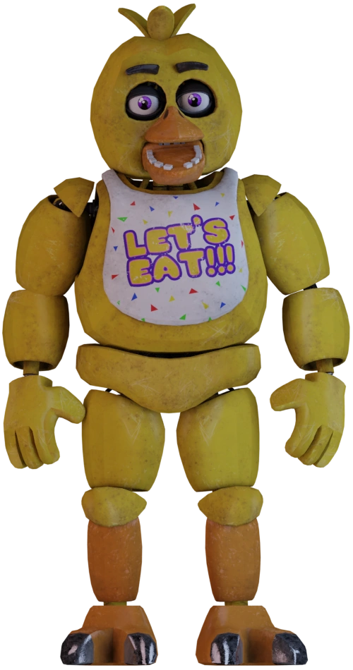

FREDDY
Внешность: Светло-коричневый медведь-аниматроник; носит черные галстук-бабочку и цилиндр; в правой руке держит микрофон. Мы уверены, Фредди придумает оригинальный способ убийства с помощью микрофона. Увеличив его морду, можно разглядеть отпечаток пятерни над его правым глазом и еще одну отметину (возможно, это тоже отпечаток ладони) на нижней части его челюсти.Перемещения: Концертная сцена → Обеденный зал → Туалеты → Кухня → В. коридор →Угол В. коридора → Офис.На свету его глаза изменяют цвет: они синие, когда вы видите его в коридоре за дверью, но иногда, во время скримеров, они могут быть черными.Если вы смотрите на Фредди через камеры, он двигается медленнее.До третьей ночи Фредди остается неподвижным, однако только пока у вас не закончилась электроэнергия (в этом случае, он придëт за вами, в офис, со стороны Западного коридора).
BONNY
Классический Бонни является восстановленной версией Сломанной модели, хранившейся в старой пиццерии, и представляет из себя антропоморфного кролика грязно-сиреневого окраса. Он обладает достаточно плотным телосложением и средним ростом. Корпус Бонни сделан из плюша, который, однако, не полностью закрывает эндоскелет, из-за чего тот может быть виден в щелях между частями костюма (например, на руках и ушах). Бонни имеет толстые конечности с плотно прилегающими накладками на плечах и коленях. У него большие цельные ладони. Как и у других Классических аниматроников, на руках Бонни всего по 4 пальца, а на ногах — 3. Туловище кролика напоминает по форме грушу с внушительным круглым животом светло-сиреневого цвета со светлым пятном. У Бонни большая круглая голова без шеи. На макушке есть длинные кроличьи уши, разделённые на 2 сегмента, которыми аниматроник может двигать как вперёд, так и в стороны. У него крупная морда с блестящим овальным носом чёрного цвета и рядом белых прямоугольных зубов на нижней челюсти. Подобно большинству аниматроников Классической линейки, за первым рядом зубов можно увидеть второй, малый, состоящий из плоских зубов эндоскелета. Бонни имеет большие малиновые глаза, окружённые стальными веками. В отличие от других персонажей ресторана, Бонни не имеет бровей. Подобно большинству своих версий, Бонни из аксессуаров носит красный галстук-бабочку, а в качестве реквизита в руках держит электрогитару. До изменений официального дизайна Бонни носил гитару с корпусом типа «Flying V» в форме стрелы, однако такой инструмент более не является каноническим элементом его образа. На данный момент он пользуется чёрно-белой электрогитарой с красным корпусом в форме трапеции.

FOXY
В отличие от других аниматроников, Фокси прячется за занавесом в Пиратской бухте. Он будет оставаться скрытым до некоторого времени в зависимости от действий игрока и его тактики. Фокси ускоряется, если игрок не смотрит на камеры. Отличие Фокси от других аниматроников в том, что его путь заранее запланирован. Он появляется в Пиратской бухте за занавеской, после чего бежит по Западному коридору в офис.Фокси прячется за занавеской в Пиратской бухте на протяжении всей игры. Игрок должен регулярно смотреть на камеры чтобы не спровоцировать переход Фокси в следующую фазу. Если установить ИИ Фокси на 20 в своей ночи и не проверять Пиратскую бухту, то он всегда прибежит на 20-22 секунде. Также он наиболее активен в мобильной версии. У него есть следующие фазы:
1.Он прячется в Пиратской бухте за занавесом.
2.Занавес раздвинут, позволяя игроку увидеть половину морды Фокси.
3.Он вышел из занавеса и стоит перед камерой в темноте. Видны только его яркие глаза и крюк.
4.Он атакует, если занавес полностью открыт, и Фокси не видно. Также иногда надпись на табличке «Извините! Вышел из строя» может замениться надписью «Это я». После того, как Фокси пропал, немедленно следует закрыть левую дверь, чтобы не умереть. Если посмотреть в Западный коридор, то можно увидеть, как Фокси бежит к офису. Если не закрыть дверь, Фокси нападёт на игрока.
5.После того, как его атака была отражена, он возвращается в первоначальную фазу. Также, когда Фокси прибежит, будет потеряно немного энергии у батареи. Если же дверь будет открыта, то он забежит в офис и убьёт игрока.Каждый раз после своего нападения Фокси забирает немного энергии. В первое нападение он забирает 1%, во второе — 5%, в третье он забирает 11% энергии, каждое следующее нападение забирает на 5% больше.

CHIKA
Ночью вместе с другими аниматрониками она будет пытаться засунуть игрока в костюм Фредди, считая, что как «голому» эндоскелету, по правилам пиццерии, нужно его одеть в костюм. Как Бонни и Фредди, Чика начинает ночь на Концертной сцене. Когда она покидает сцену, она может пойти на Кухню, в Обеденный зал и Восточный коридор (ходит по траектории Фредди, т.е. двигается по правой части здания). Как и у Бонни, чем ближе к офису, тем безумнее у Чики становится внешность. Её челюсть открывается шире, а на четвёртой ночи она и вовсе начинает проявлять странную активность, а именно дёргаться и издавать жуткое роботизированное бормотание в Углу восточного коридора. Она — единственный аниматроник, который будет иметь доступ к Кухне во время первых двух ночей. Будет слышен шум кастрюль и сковородок (возможно, она перебирается через них). Чика появляется у двери реже, но может оставаться там дольше, заставляя игрока тратить больше энергии. Как и другие аниматроники, она становится более агрессивной с каждой ночью, также уменьшается время, за которое игрок должен успеть закрыть дверь.
На своей ночи на сложностях 13-20 Чика чаще всего перемещается в районе Восточного коридора, изредка выходя в Обеденный зал, на Кухню и в Туалеты.